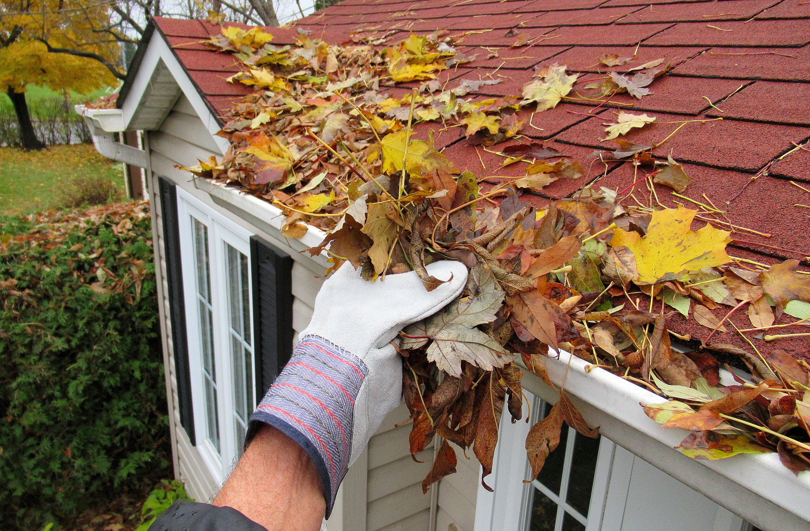
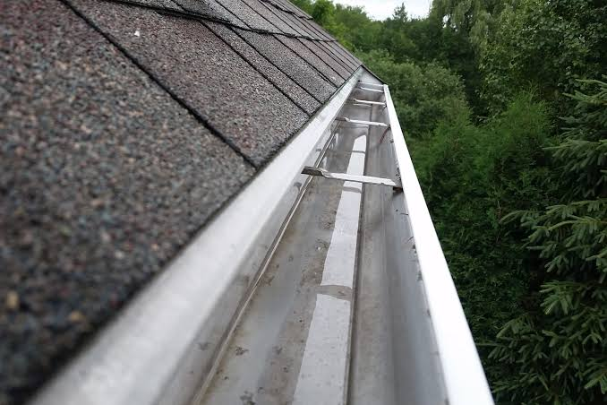
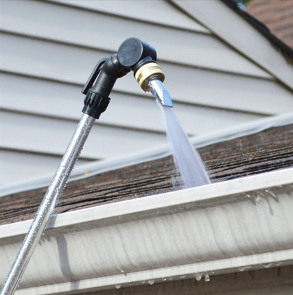

Gutter Cleaning in Jacksonville, FL
Licensed & insured gutter cleaning professionals serving all Jacksonville neighborhoods. Prevent overflow, wood rot, and foundation damage with fast, affordable service.
Professional Gutter Cleaning for Jacksonville Homes
Our gutter cleaning service protects your home from water damage caused by Florida’s heavy rainfall and humidity. We remove all debris, flush downspouts, and ensure your gutter system flows properly — preventing overflow, wood rot, fascia damage, and foundation issues.


How Our Gutter Cleaning Process Works
We follow a thorough, safe, and efficient process to ensure your gutters are fully cleaned and flowing properly.
- 1. Roof Edge Clearing — We remove leaves, branches, and debris sitting along the roofline.
- 2. Hand Removal of Gutter Debris — All debris is removed by hand or with specialized scoops to avoid damage.
- 3. Downspout Flushing — We run water through every downspout to confirm proper flow and clear hidden clogs.
- 4. System Flow Test — We check the entire gutter system to ensure water moves freely from end to end.
- 5. Cleanup & Disposal — All debris is bagged and removed from your property.
- 6. Before & After Photos — You receive photos showing the results of your service.


Tools We Use for Gutter Cleaning
We use professional tools designed for safe and effective gutter cleaning — no shortcuts, no damage.
- Gutter scoops — For removing packed debris safely.
- Extension ladders — Stabilized and padded to protect your gutters and siding.
- Downspout flushers — High‑flow hoses to clear clogs deep inside downspouts.
- Leaf blowers (optional) — For clearing roof edges and loose debris.
- Soft‑wash sprayers — Used only when needed for algae or mildew buildup.
- Safety equipment — Harnesses, gloves, and stabilizers for safe operation.
Why Gutter Cleaning Matters in Jacksonville
Jacksonville’s climate creates the perfect conditions for clogged gutters. Heavy rainfall, humidity, oak trees, and seasonal storms cause gutters to fill quickly — leading to overflow and costly home damage.
- Prevents water overflow
- Protects fascia boards and soffits
- Stops wood rot and mold growth
- Prevents foundation erosion
- Reduces risk of roof leaks
Most Jacksonville homes need gutter cleaning every 6–12 months.
Explore Our Exterior Cleaning Services
Gutter Cleaning • Gutter Brightening • Pressure Washing • Siding Soft Wash